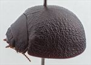
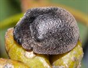
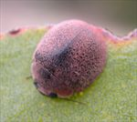
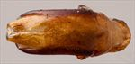
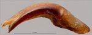
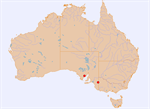

Click on images to enlarge


Female, Ngarkat N.P., South Australia


Female, Cleve, Eyre Peninsula, South Australia


Male, Ngarkat N.P., South Australia


Aedeagus, dorsal view (Ngarkat N.P., South Australia)


Aedeagus, lateral view (Ngarkat N.P., South Australia)


Distribution
Name
Trachymela sp. Ta107
Reference specimen
2004-404, Ngarkat N.P, South Australia.
Adult Description
Length: ♂ 7.75 mm (n=1), ♀ 7.8–8.4 mm (n=4).
Colouration:
- Head: Black, or, less often, very dark reddish-brown, with clypeus and anterior of frons black; labrum yellowish-brown, usually with extensive areas black, or completely black; mandibles black; antennomeres 1–3 mid-brown, 4–6 grading darker brown, 7–11 dark brown, rarely black.
- Pronotum: Dark brown, concolorous with or fractionally darker than rear of head; lateral edge and sometimes all or part of anterior edge black.
- Scutellum: Black.
- Elytra: Very dark brown, concolorous with or slightly darker than disc of pronotum, or black, marginal area sometimes slightly paler; punctures concolorous with interstices; humeral callus black.
- Venter & Legs: Venter black or very dark brown, legs concolorous; inner surface of elytral epipleura black.
- Cuticular Wax: Light brown, usually with a light and even cuticular wax over head, pronotum, and elytra.
Morphology:
- Head: Punctures fine (pd ≈ 1.5–2.0 × ef) and quite evenly and densely distributed. Antennae moderately long (AL: ♂ 41.2% BL, ♀ 35–37% BL), A4 ≈ A3, filiform.
- Pronotum: Almost evenly curved transversely; foveal depression absent or (rarely) present only as a small depression in surface near anterior margin just behind inner edge of eye; a small, round elevation sometimes present in middle of foveal area; punctures on disc clearly impressed, similar in size to those on head, closely and rather evenly distributed, punctures becoming considerably coarser from inside margin of foveal area towards lateral margin. Anterior margins join lateral margins in a smoothly rounded right-angle, with lateral margin initially almost straight for more than half of length, then curving smoothly and gradually towards the much thicker posterior margin.
- Scutellum: Punctured, punctures sometimes almost as deeply impressed, large, and dense as those on disc of pronotum, more often punctures slightly smaller and much less clearly impressed.
- Elytra: Evenly rounded from scutellum to about 30% of distance from apex, where curvature increases slightly; females strongly convex (H/BL: ♂ 0.40, ♀ 0.48–0.51), highest point somewhat variable, from just in front of to just behind middle of elytral margin (PGH: ♂ 55.6% BL, ♀ 50–53% BL). Surface evenly curved, punctures poorly defined over almost whole of surface, lost in the closely-spaced granular interstices that form a network of short thin ridges over whole of elytral surface; a scatter of very fine punctures present on the interstices especially around anterior half of elytral suture and on lateral margins; some small round verrucae, often with a puncture in the middle, are scattered around disc, but inconspicuous as they project no higher than most of the surrounding interstices; surface discontinuous under humeral callus. Vertical extension of epipleura considerable (HCE/PW = 0.36–0.39).
- Venter: Prosternal process narrowest anteriorly, closed anteriorly; short setae present sparsely over prosternal process and mesoventrite; one long seta on anterior and median trochanters, one on posterior trochanter; anterior edge of metaventrite beveled, truncate; inner edge of epipleura setose posteriorly, forward to about posterior edge of 1st abdominal ventrite.
Male Genitalia (Aedeagus):
- Dimensions: Short (LPE/BL = 25.3%).
- Dorsal view: Shaft widest just anterior to basal sulcus, then almost parallel-sided, sometimes widening almost imperceptibly at about middle of ostium from where sides converge towards apex very gradually at first and then in an almost even and gradual arc; dorsal surface smoothly curved with a well-defined dorso-median channel extending almost to basal sulcus, dorsolateral channels relatively short; ostial depression in the shape of an oval that is very slightly longer than wide, though posterior margin merges almost without discontinuity with dorsal surface behind it, with two dorsal ostial processes extending forward to just in front of apex of spatula; spatula small, tip triangular.
- Lateral view: Shaft curved over about 75° near basal sulcus, then very gently and evenly curved to just before apex where curvature increases fractionally, tip deflexed.
Immature Stages
Unknown.
Similar species
- Ta116: Essentially identical in external morphology to Ta107. The aedeagus of the two species are almost identical in length and shape, but that of Ta107 has noticeably protruding dorsal ostial processes that extend to the tip while those of Ta116 are shorter. It is very possible that some of the female specimens assigned to this species may be more correctly placed in Ta116. It is also possible that Ta116 and Ta107 constitute a single species. Little material is available for these two species (only one male of Ta107) and the aedeagus of Ta116 specimens exhibits some variation, with the length of the dorsal ostial process possibly a part of this variation. However, they have been found on hosts in different sections of Eucalyptus.
- Ta123: Exceedingly close to Ta107. It always has longitudinal lines of more concentrated cuticular wax on the elytra. Ta123 also has slightly shorter antennae in both sexes as well as having smaller inter-antennal spacing.
- Ta124:
Notes
- Taxonomy: Member of the alta-group, a group of relatively large species that are characteristically strongly rounded (almost hemispherical) with the elytra having a uniform and rather finely granulate surface, verrucae (if present) rather small, and a row of setae on the apical portion of the inner epipleura. The species within this group can be difficult to separate. The group seems to be confined to the mallee areas of southern Australia.
- Host Associations: Collected from Eucalyptus incrassata and E. phenax (both in subgenus Symphyomyrtus, section Dumaria).
- Morphological Variation: The single male of Ta107 available is not as strongly rounded as the females (or males of the closely related Ta116).
Copyright © 2026. All rights reserved.